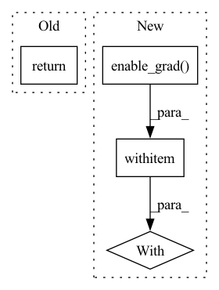

Pattern ID :30170
Before Change
inputs.append(input)
outputs.append(output)
gradients = torch.autograd.grad(inputs, outputs, grad_outputs=self.gradient_mapper(grad_output, outputs))
return self.reducer([input.detach_() for input in inputs], [gradient.detach_() for gradient in gradients])
def copy(self):
"""Return a copy of this hook.After Change
outputs = []
for in_mod, param_mod in zip(self.input_modifiers, self.param_modifiers):
input = in_mod(self.input[0].detach()).requires_grad_()
with mod_params(module, param_mod) as modified, torch.autograd.enable_grad():
output = modified.forward(input)
inputs.append(input)
outputs.append(output)
gradients = torch.autograd.grad(outputs, inputs, grad_outputs=self.gradient_mapper(grad_output[0], outputs))In pattern: SUPERPATTERN
Frequency: 4
Non-data size: 4
Instances Fragment ID: 89403364
Project Name: chr5tphr/zennit
Commit Name: bdde3c04887a3f0182c57d10439ef77590c4225d
Time: 2020-10-29
Author: chrstphr@posteo.eu
File Name: zennit/core.py
M Class Name: LinearHook
N Class Name: LinearHook
M Method Name: backward(4)
N Method Name: backward(4)
M Parent Class: Hook
N Parent Class: Hook
M File Name: zennit/core.py
N File Name: zennit/core.py
M Start Line: 138
M End Line: 146
N Start Line: 138
N End Line: 147
Before Change
fn_input.detach_()
args = (fn_input, sequence_input, linear_param0, linear_param1, bn_weight0, bn_bias0, bn_weight1, bn_bias1)
grad_out = ReversibleRNNFunction._forward_pass(*args)
return torch.autograd.grad(grad_out, args, grad_output) + (None,)
class RevRNN(torch.nn.Module):After Change
with torch.no_grad():
inp0 = out0 - ReversibleRNNFunction._calc(out1, sequence_input, bn_weight1, bn_bias1, linear_param1)
inp1 = out1 - ReversibleRNNFunction._calc(inp0, sequence_input, bn_weight0, bn_bias0, linear_param0)
with torch .enable_grad():
fn_input = torch.cat([inp0, inp1], -1)
fn_input.detach_()
fn_input.requires_grad_(True)
args = (fn_input, sequence_input, linear_param0, linear_param1, bn_weight0, bn_bias0, bn_weight1, bn_bias1) Fragment ID: 89403365
Project Name: homebrewnlp/homebrewnlp
Commit Name: a0f0b4030e607ddb8baa74812668409814dc9a48
Time: 2020-07-13
Author: 39779310+ClashLuke@users.noreply.github.com
File Name: module.py
M Class Name: ReversibleRNNFunction
N Class Name: ReversibleRNNFunction
M Method Name: backward(2)
N Method Name: backward(2)
M Parent Class: torch.autograd.Function
N Parent Class: torch.autograd.Function
M File Name: module.py
N File Name: module.py
M Start Line: 50
M End Line: 58
N Start Line: 51
N End Line: 67
Before Change
@staticmethod
def backward(ctx, *grad_outputs):
return super().backward(ctx, *grad_outputs)
After Change
mask = ctx.mask
x1, x2 = ctx.function.reverse(y1, y2, mask)
Reversible.outputs = (x1, x2)
with torch .enable_grad():
x1.requires_grad = True
x2.requires_grad = True
y1, y2 = ctx.function(x1, x2, mask)
grad = torch.autograd.grad(outputs=(y1, y2), inputs=(x1, x2), grad_outputs=grad_outputs)
Fragment ID: 89403366
Project Name: rick-mccoy/reformer-pytorch
Commit Name: 4da6d0fcb3ce7e616d2e8cc9195b5b21dfd431cb
Time: 2020-01-10
Author: rickmccoy3141@gmail.com
File Name: model/reversible.py
M Class Name: Reversible
N Class Name: Reversible
M Method Name: backward(1)
N Method Name: backward(1)
M Parent Class: Function
N Parent Class: Function
M File Name: model/reversible.py
N File Name: model/reversible.py
M Start Line: 22
M End Line: 22
N Start Line: 24
N End Line: 34
Before Change
x2.requires_grad = True
y1, y2 = ctx.function(x1, x2, mask)
grad = torch.autograd.grad(outputs=(y1, y2), inputs=(x1, x2), grad_outputs=grad_outputs)
return (None, *grad, None)
After Change
x1_grad = y1_grad + y1.grad
y1.grad = None
with torch .enable_grad():
x2.requires_grad = True
fx2 = ctx.layer.f_block(x2, mask)
fx2.backward(x1_grad)
Fragment ID: 89403367
Project Name: rick-mccoy/reformer-pytorch
Commit Name: ba4ca176c189afc7a5ab76d9aea596478ea128a8
Time: 2020-01-15
Author: rickmccoy3141@gmail.com
File Name: model/reversible.py
M Class Name: Reversible
N Class Name: Reversible
M Method Name: backward(1)
N Method Name: backward(1)
M Parent Class: Function
N Parent Class: Function
M File Name: model/reversible.py
N File Name: model/reversible.py
M Start Line: 26
M End Line: 36
N Start Line: 24
N End Line: 49